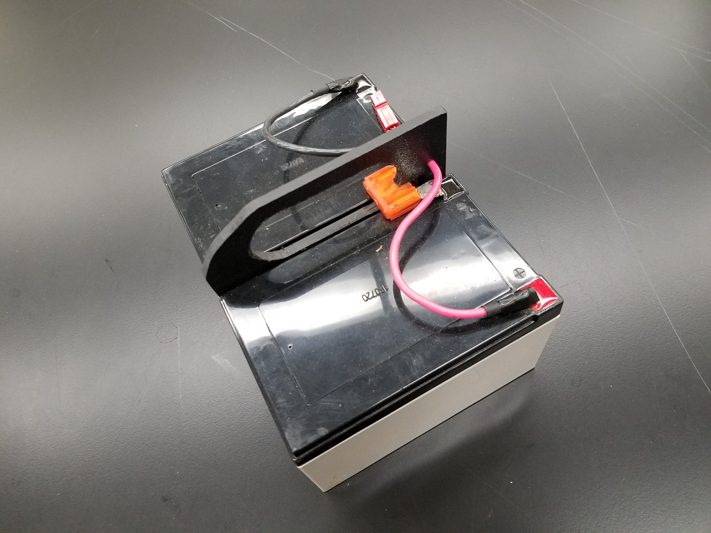

DIY Electrofisher Batteries
If you’ve done any work involving fishes in streams, estuaries, lakes, or really any shallow body of water, you’re probably familiar with the Smith-Root LR-20B and LR-24 backpack electrofishers. These battery-powered units are used for research and management around the world. In addition to being rugged and reliable they include such luxuries as safety stops and digital displays.
Unlike the gas-generator-welded-to-a-packframe constructions that preceded them, battery powered electrofishers are quiet, relatively light, and easy to maintain. The only drawback is one shared by all battery powered equipment. Namely, that batteries don’t last forever. In fact, the standard lead-acid battery (the chemistry used in Smith-Root’s batteries) lasts for about five years if treated well. Heavy use, deep discharges, or long periods without maintenance charging can greatly reduce this lifespan. Even newer battery technologies, such as the lithium iron phosphate cells that Smith-Root recently introduced, share this limitation.
Beyond wearing out it’s also just convenient to have some spare batteries lying around. Whether you’re planning a week-long backpacking trip to shock some remote lakes or simply hedging your bets and not relying on the last user to charge everything up after they’ve finished their work, spare batteries can save your day in the field.
Smith-Root understands this and, conveniently, sells replacement batteries. However, at time of writing the basic 24V 7Ah battery retails for about $330.00USD. This isn’t much of a problem if you’ve got good funding, but for a grad student, a small lab, or a group doing educational outreach, $300 can be a lot of money. Luckily, it turns out that there’s a way around this.
A little while ago, one of my colleagues asked me to take a look at an old Smith-Root backpack electrofisher and batteries that they’d inherited from another group. The electrofisher was fine but the batteries were, predictably, shot. After taking a closer look I realized that each battery is simply made from a handful of off-the-shelf parts, a little glue, and a bit of solder. How much do these parts cost? About $30 for a standard battery and closer to $40 for a 24V 12A extended life battery ($388USD retail, at time of writing).
Construction
Each Smith-Root backpack electrofisher battery (for either the LR-24 or LR-20B) supplies 24 volts and has a capacity of either 7 amp-hours or 12 amp-hours (for the extended life version). With the exception of the new lithium iron phosphate (LiFePO4) technology, these batteries use sealed lead-acid (SLA) cells that require no maintenance beyond regular charging. Now 24V is a little unusual in the general lead-acid battery market (most are 12V) but, as you may recall from basic physics, wiring two batteries together in series adds their respective voltages. If we do this to two 12V cells we’ll end up with a 24V and, as you can see from the picture, that’s exactly what Smith-Root has done.
 In fact,
the Smith-Root batteries are simply two commercially available SLA
batteries glued to a plastic handle and wired in series. This handle is
nothing more than a 0.25″ thick sheet of ABS plastic with a hole routed
in it for a handle and a spot for the power connectors. Since the
battery cases are also made of ABS plastic, it’s possible to create very
strong glue joints between the three components. The only remaining
pieces are the fancy orange connector between the center (-) and (+)
terminals which turns out to be a 40A automotive fuse (MAXI size), and
the connectors that attach the battery to the electrofisher. These
connectors are known as Anderson Powerpoles and have a rather rather
cool stackable, genderless design. They can be bought for about a dollar
apiece from a number of different hardware supply websites.
In fact,
the Smith-Root batteries are simply two commercially available SLA
batteries glued to a plastic handle and wired in series. This handle is
nothing more than a 0.25″ thick sheet of ABS plastic with a hole routed
in it for a handle and a spot for the power connectors. Since the
battery cases are also made of ABS plastic, it’s possible to create very
strong glue joints between the three components. The only remaining
pieces are the fancy orange connector between the center (-) and (+)
terminals which turns out to be a 40A automotive fuse (MAXI size), and
the connectors that attach the battery to the electrofisher. These
connectors are known as Anderson Powerpoles and have a rather rather
cool stackable, genderless design. They can be bought for about a dollar
apiece from a number of different hardware supply websites.
First you need to source two 12V SLA batteries in either the 7A or 12A size (you can go with other sizes too, all you’re changing is the fishing time). There are actually a few competing brands for these, all with pretty much the exact same range of sizes and quality. The only real difference between brands is the color of the casing. Smith-Root appears to use AJC batteries but Sigmastek (which I’ve used here) or Powersonic will also work. AJC simply refers to the batteries by voltage and amperage (so 12V 7A or 12V 12A) while Sigmastek calls them SP12-7 and SP12-12 and Powersonic labels them the PS1270 and PS12120. All are equivalent so I recommend shopping around for the best deal.
Once you’ve done that you need to collect the other pieces. I’ve had good success getting 12″x48″ sheets of 0.25″ ABS plastic from Grainger (which will make a lot of batteries) and the other components can be obtained from McMaster-Carr. The Powerpole connectors should be the 45A size and I recommend getting the combined housing and connector kits. By mixing a five-part red kit with a similar black one you get enough connectors to make five batteries. Finally you’ll need the aforementioned 40A MAXI fuse, some 8AWG wire in red and black, and some heat-shrink tubing to protect the terminals.
 The next
step is to cut down your ABS sheet until you’ve got a chunk about 6″ by
5.5″. I did this on a bandsaw but a jigsaw, scroll saw, or even a
hacksaw would work just as well. If you’d like to be fancy you can add
the rounded corned at this time, although it’d certainly not necessary
for normal operation. I’ve found that a coarse file works well for
cleaning up any rough edges and doing final shaping.
The next
step is to cut down your ABS sheet until you’ve got a chunk about 6″ by
5.5″. I did this on a bandsaw but a jigsaw, scroll saw, or even a
hacksaw would work just as well. If you’d like to be fancy you can add
the rounded corned at this time, although it’d certainly not necessary
for normal operation. I’ve found that a coarse file works well for
cleaning up any rough edges and doing final shaping.
After that’s done it’s time to cut out the rounded handle slot. In all honesty, you could skip this step completely (and the handle itself, for that matter) but it’s nice to have when you’re carrying the battery around and provides a place to run the strap when securing the battery to the electrofisher. I tried a few different ways of making this, including a dremel, but finally settled on a combination of a hole saw (for the rounded ends) and a keyhole saw (for the straight areas between them) with a bit of filing to finish up. A jigsaw or scroll saw would probably work well too.
 At this
point I recommend testing the fit to make sure that everything lines up,
especially the fuse in its little slot. Then, if you’re happy with how
it all goes together it’s time to get out the glue and set about making
it permanent. I have no idea what Smith-Root uses but I went with
Weld-On 16, namely because I had some lying around. Any glue that’s
suitable for ABS plastic should work fine as we’re not doing anything
exotic like joining dissimilar materials. Once you’re got that all set
up it’s time to clamp it and step away for 24 hours or so.
At this
point I recommend testing the fit to make sure that everything lines up,
especially the fuse in its little slot. Then, if you’re happy with how
it all goes together it’s time to get out the glue and set about making
it permanent. I have no idea what Smith-Root uses but I went with
Weld-On 16, namely because I had some lying around. Any glue that’s
suitable for ABS plastic should work fine as we’re not doing anything
exotic like joining dissimilar materials. Once you’re got that all set
up it’s time to clamp it and step away for 24 hours or so.
 After the glue sets, all that’s left is to solder the fuse across the middle two tabs (linking the batteries in series and adding their voltages to make a 24V unit) and then solder the wires to the two remaining outside tabs. Connect the matching color Powerpole connectors to the end of each wire and you have yourself a battery unit that’s 100% compatible with both LR-24/LR-20B units and the battery chargers associated with them.
Feel free to email with any questions or comments. I’m especially interested in hearing from anyone who’s built one of these and would love to see pictures of the finished product.
Update Sept. 2019: I’ve heard from a few people interested in whether this technique can be used to make replacements for Smith-Root 24V 9.6AH lithium batteries and the answer is yes, this definitely works for those too. You’ll just need to buy LiFePO4 SLA replacements which are available from many of the same suppliers selling regular SLA batteries. These tend to run in the $100-150 range for ~9.6AH so two will run you around $300, a far cry from the $997 Smith-Root currently charges. The only additional wrinkle is that Smith-Root’s lithium models use a 6-pin powerpole connector instead of the normal two and come with a 6-to-2 pin adapter that allows you to connect the battery to their electrofishers and chargers. This is entirely due to shipping regulations: if the two batteries were permanently connected they would have to be re-certified as a “new” battery. Instead, Smith-Root runs all four battery terminals to the connector (the extra two are just for show) and then uses the adapter to connect them in series. This allows them to rely on the original certification for the batteries and avoid regulatory hassles. If you’re not going to ship your homemade batteries you can simply follow the 2-pin instructions above or you can use a multimeter to figure out the terminal order that Smith-Root uses and go with 6-pin connectors (although you’ll need to acquire or make 6-to-2 pin adapters if you go this route).
Disclaimer: I’m not a professional engineer nor am I in any way associated with Smith-Root. This worked for me but I can’t guarantee that it will for you.